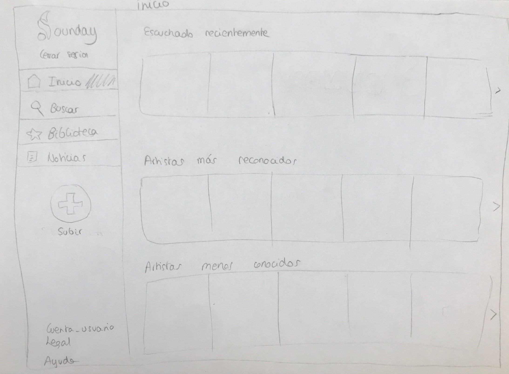
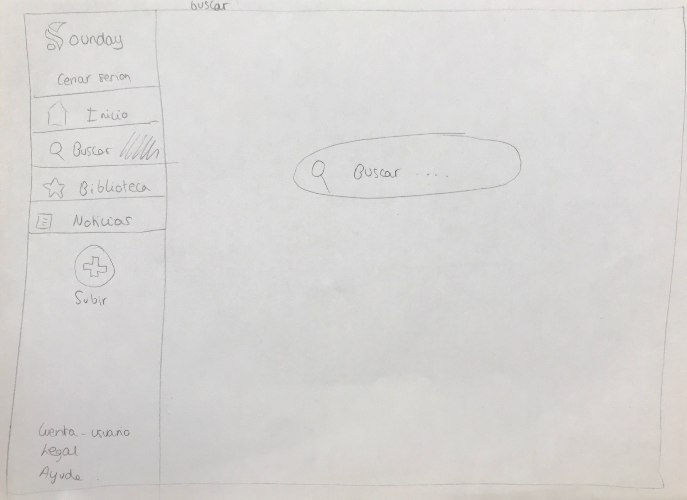
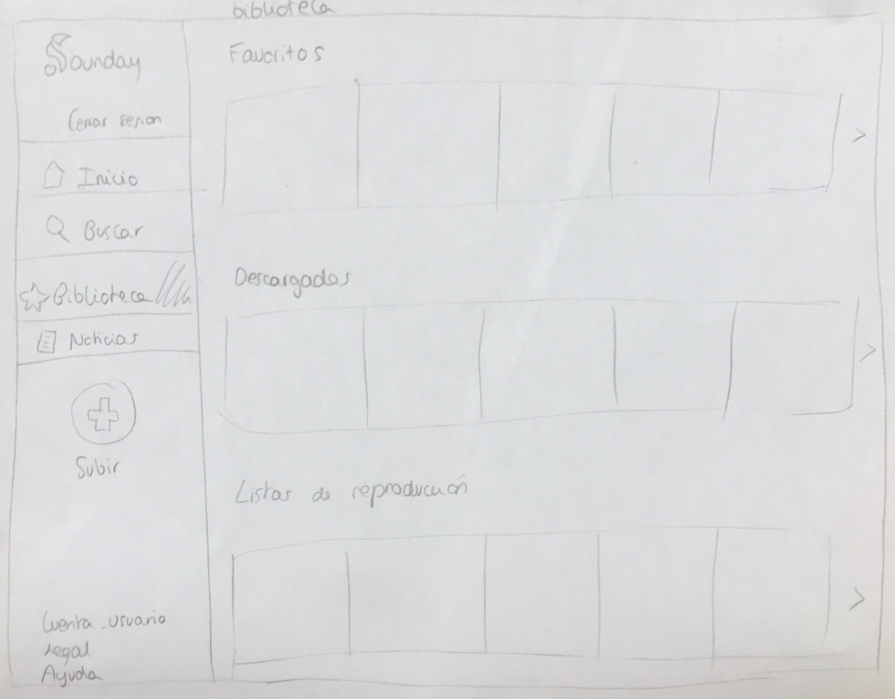
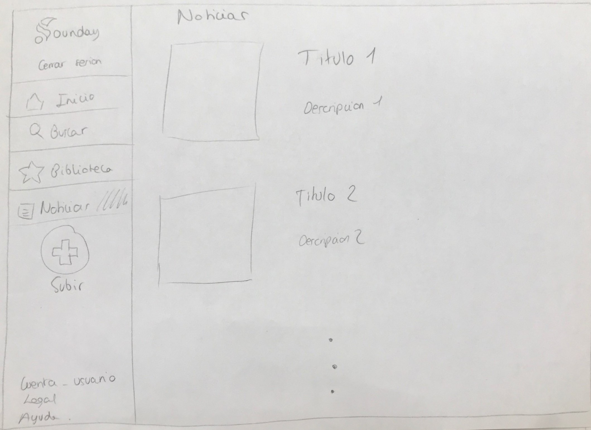

Bocetos
-
Pagina principal:
Al abrir la aplicación Sounday el usuario llegará a esta página donde podrá ver algunos detalles de las funcionalidades de la aplicación. Además, en la cabecera podrá acceder a la página de inicio de sesión o a una similar de registro.
-
Iniciar sesión:
La página de inicio de sesión sirve para que el usuario meta sus credenciales (usuario y contraseña) y acceder a su cuenta de Sounday.
-
Inicio:
En esta página podremos encontrar el acceso a todo el contenido de la web. En la barra lateral izquierda se encuentran todos los enlaces a las distintas páginas de Sounday.
-
Artista:
Página en la que veremos una foto del artista (si tiene) y podremos explorar entre sus álbumes y canciones más conocidas.
-
Canción:
Aquí el usuario podrá reproducir dicha canción, además de tener la posibilidad de crear hilos si se trata de un usuario premium y comentar en otros ya existentes si no posee dicha suscripción e incluso descargarla.
-
Buscar:
Página en la que el usuario podrá explorar sus artistas, canciones y álbumes favoritos.
-
Biblioteca:
Sección privada de cada usuario, aquí podrá ver su colección de canciones escuchadas, descargadas y sus listas de reproducción.
-
Noticias:
Tablón de noticias de las seleccionadas por el gestor musical (las que le resulten relevantes). Aquí se encontrarán todas las novedades del momento o noticias que haya elaborado algún artista para promocionar.